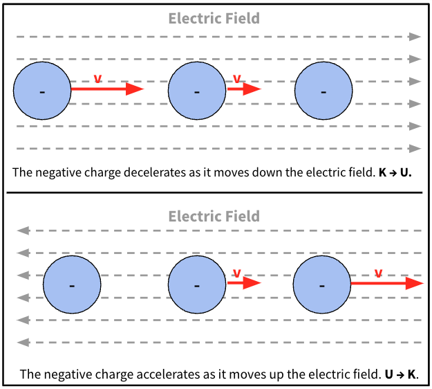
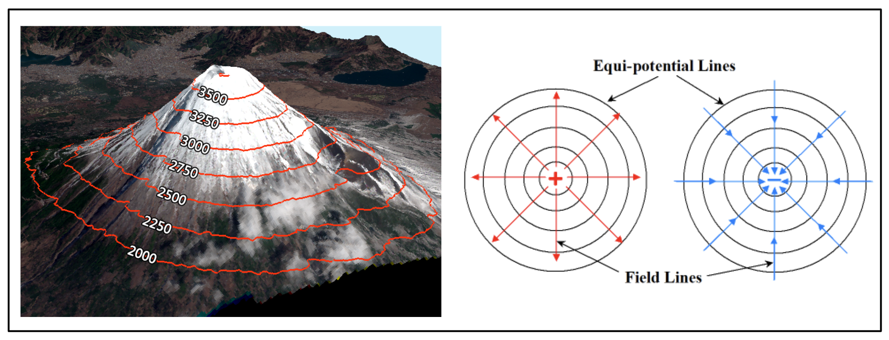
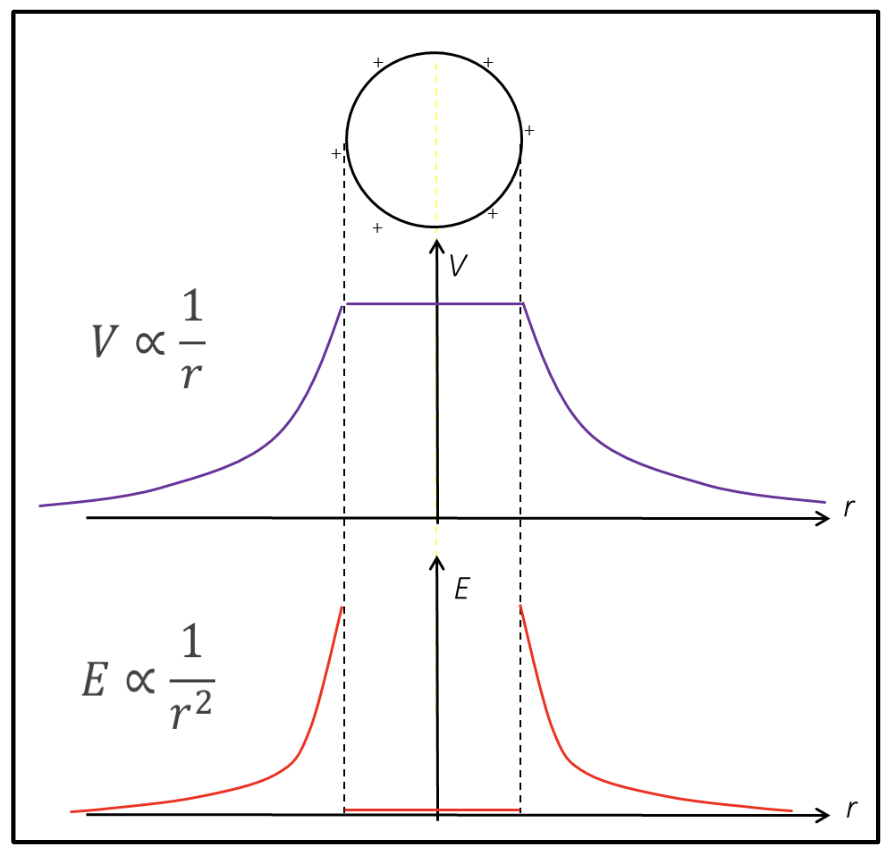
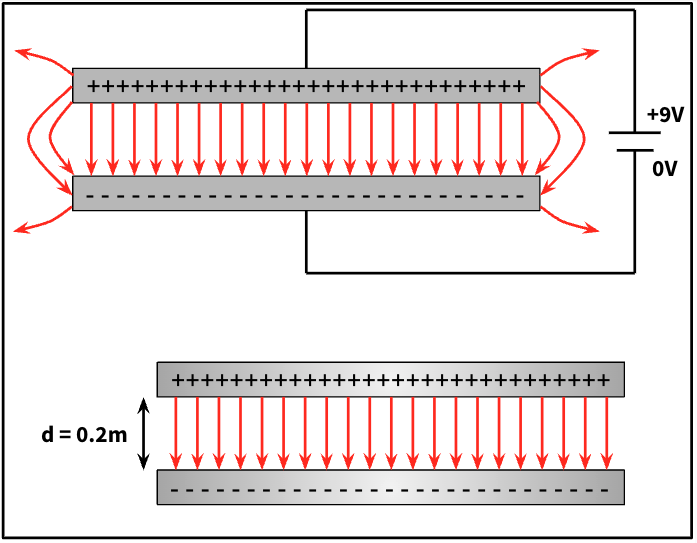
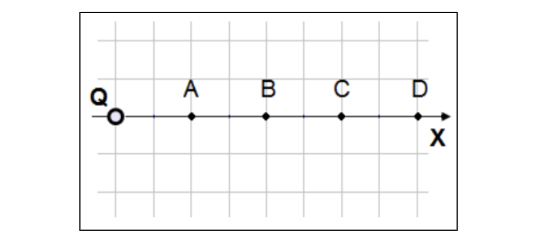
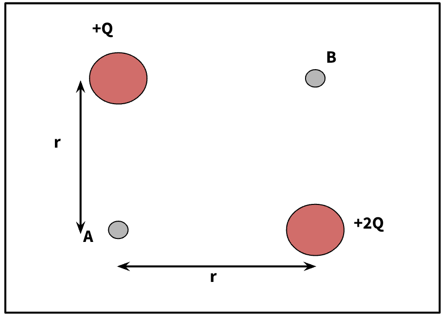

Lecture 8: Electric Potential and Work Done#
Learning Objectives#
By the end of this lecture you should:
Be able to define and know the equations for electric potential and work done.
Be able to sketch the electric field and voltage for a charged hollow sphere and a pair of charged parallel plates.
Electric Potential Energy#
Perhaps one of the easiest traps to fall into when studying electromagnetism is not realising that electric potential and electric potential energy do not refer to the same thing. First, let’s consider electric potential energy by looking at the figure below.

In the first half of the figure a negative charge has an initial velocity in the positive \(x\)-direction. As it is negative, the charge will experience a force that acts to accelerate it up the electric field in the negative \(x\)-direction.
This will mean that the charge is decelerated. It’s kinetic energy, \(K\), is converted into potential energy \(U\).
In the second half of the figure the charge is initially at rest opposite and the direction of the electric field has been reversed. This means that the charge will experience a force that acts to accelerate it in the positive \(x\)-direction.
This means that the velocity of the charge increases, as does its kinetic energy. Thus its potential energy is being converted to kinetic energy.
This example is analogous to a ball being rolled up or down a hill. The ball represents the charge and the steepness of the hill represents the electric field strength.
In the example above, the electric field is doing work on the charge to cause it to accelerate or decelerate. Conservation of energy dictates that the sum of energies at its initial vs final position must be equal:
The work done by the electric field on the particle must be equal to the change in its kinetic energy:
By rearranging our initial equation, the work done can be expressed in terms of the potential energy:
By recalling that work done has an alternative definition, we can write an expression for the potential energy of a charge in an electric field. Work done is also equal to force multiplied by displacement:
therefore, continuing from above:
By considering the Coulomb force acting on the charge we can derive a general expression for the potential energy of two charges:
The force \(F\) is the Coulomb force and the limits of integration in this case will be the radial distances between the two charges at points \(a\) and \(b\). Therefore the equation above can be expressed as:
which when evaluated becomes:
Recalling that \(W = -\Delta U \):
Therefore the general expression for the electric potential energy is simply:
Important
The general expression for electric potential energy is:
This expression is derived by considering the work done in moving a charge through an electric field and understanding that \(W = - \Delta U\).
Electric Potential#
Now that we have an understanding of electric potential energy and an expression to calculate it, it is possible to define what is meant by electric potential. The electric field strength is simply the force per unit charge. Similarly, the electric potential, \(V\), is simply the potential energy per unit charge. This can be expressed mathematically as:
which if we substitute the above derived expression for electric potential energy becomes:
A consistent definition for the electric potential at a point \(r\) in an electric field is the work done per unit positive charge in bringing a test charge from infinity to that point r. This can be expressed mathematically as:
The electric potential is a scalar field that can have many different values at different positions around a point charge. In any given position, the electric potential will have a value (magnitude), but no associated direction.
Recalling that work done is measured in joules, the electric potential has units of joules per coulomb which is the same as a volt.
Important
Electric Potential is the electric potential energy per unit charge and can be calculated using:
It has the unit of Volt.
Electric Potential and Electric Fields#
When discussing the transfer of energy from kinetic to potential or vice versa, I used the analogy of a ball rolling up or down a hill, where the steepness of the hill corresponded to the strength of the electric field. This analogy is also useful for understanding the relationship between electric potential and electric field strength.
First, let’s introduce the idea of equipotential. Equipotential lines follow the regions of equal electric potential. For example, if you consider the region of space around a point charge, the electric potential at any distance \(r\) from the point charge will be the same regardless of the direction. Thus we can draw lines of equipotential around the charge. For a point charge, these lines will be circular, however for more complex distributions of charge, these lines form different patterns.
How do we then relate the electric field strength to the electric potential? Well recall that:
and
Rearranging the latter equation and subbing into the second gives:
therefore,
as \( \Delta V = -\frac{\Delta U}{\Delta q}, \)
The electric field is therefore proportional the rate of change of the electric potential \(V\) over a given distance \(x\). The electric field is the negative potential gradient.
An easy way to think about equipotential is to consider a contour plot of a mountain. The countour lines represent regions of equal elevation. The closer together the contour lines, the steeper the mountain. Similarly, as we have shown above the closer the lines of equipotential, the steeper the gradient and consequently the greater the electric field strength!.

Important
Equipotential lines ares lines showing regions of equal potential. The gradient of the line that interects these equipotential lines perpendicularly gives the magnitude of the electric field in that direction. This can be calculated as:
The closer together the lines of equipotential, the great the electric field strength.
Electric Fields Examples#
Thus far we have only really consider the electric fields produced by individual charges. It is however useful to consider the electric fields produced by different macroscopic systems. The examples we will look at are charged parallel plates and a charged hollow sphere.
Charged Hollow Sphere#
Consider a hollow conducting sphere with charge evenly distributed across it surface. Electric field lines will radiate from the surface and the electric field strength will decay owing to the inverse square law. The electric field lines will also permiate into the sphere, however, for every field line their will be an equal and opposing field line originating from the opposite side of the sphere. This means that inside the sphere the electric field lines cancel out and there is no net electric field.
The electric potential will also decay as one moves further from the surface of the sphere. This time the decay will simply be inversely proportional to the distance from the surface. As there is no electric field inside the sphere is equal to zero, this must mean that the rate of change of potential gradient is also equal to zero:
The electric potential remains constant inside the sphere.

Charged Parallel Plates#
It is possible to produce a uniform electric field (one which does not change) using two charged parallel plates (ignoring edge effects). If these plates are connected to a the terminals of a power supply, one plate per terminal, they will have different potentials. Consider the example below where the plates are connected to a 9V battery - the top plate has a potential of \(9\,\)V whereas the bottom plate has a potential of \(0\,\)V.

The electric field between the plates is simply dependant on the difference in potential and the plate seperation, \(d\):
In the case of the example above, the electric field would simply equal:
Finally, let us consider the work done on a particle moving from one plate to the other. Let’s assume that a negative charge is placed at the positive plate and then accelerated towards the negative plate, the work done on it by the electric field (and its corresponding gain in kinetic energy) can be determined as follows:
Rearranging \( E = \frac{F}{q}\) to \(F=Eq\) and substituting gives:
Recalling \( E = \frac{V}{d} \) and substituting gives:
Important
The energy gained by a charge moving through a potential difference of \(V\) across a distance \(d\) is given by:
This is an key equation to remember as charges are routinely accelerated through potentials.
Questions#
Warning
Atempt the questions before looking at the solutions otherwise you will not learn!
Students who look at mark schemes without going through the motions of a question often think “yes, that’s what I would have done”, but are then unable to perfom on exams as the knowledge was never consolidated through practise.
Note
Units have been omitted in calculations below for simplicity. Ensure you know what each value represents.
Question 1#
An electron orbits a proton in a hydrogen atom at a distance of \(5.3 \times 10^{-11}\, m\). What is the potential energy of the electron?
Q1 Solution
Recall that an electron and a proton have the same but opposite charges and use the appropriate equation to determine the electric potential energy:
\( U = \frac {kQq}{r} \)
\( U = \frac{8.99\times 10^9 \cdot -1.6\times10^{-19} \cdot 1.6 \times 10^{-19}}{5.3 \times 10^{-11}} \)
\( U = -4.4 \times 10^{-18} \, J \)
Question 2#
An electric charge Q is placed at the origin as shown in the figure below. What is the ratio between the potential at point A and the potential at point B?

Q2 Solution
To determine the electric potential at either point we simply use the equation:
\(V = \frac{kQ}{r}, \)
such that
\(V_A = \frac{kQ}{r_a}, \)
and
\(V_B = \frac{kQ}{r_b}. \)
Taking the ratio of these two potentials gives:
\(\frac{V_A}{V_B} = \frac{\frac{kQ}{r_a}}{\frac{kQ}{r_b}},\)
\(\frac{V_A}{V_B} = \frac{kQ}{r_a} \times \frac{r_b}{kQ} \)
\( \frac{V_A}{V_B} = \frac{r_b}{r_a}. \)
From the figure we can see that \(r_b\) is equal to \(4\) units and \(r_a\) is equal to \(2\) units meaning:
\(\frac{V_A}{V_B} = \frac{4}{2}, \)
\(\frac{V_A}{V_B} = 2.\)
Question 3#
Points A and B are each the same distance, \(r\), from two charges, \(+Q\) and \(+2Q\), as shown in the figure below. What is the work required to move a charge \(q\) from point A to point B?

Q3 Solution
Recall that the work done is simply equal to the negatice change in potential energy:
\( W_{a \to b} = - \Delta U = U_a - U_b, \)
and that the potential energy is related to the electric potential by:
\( V = \frac{U}{q}, \)
therefore :
\( U = Vq, \)
which when substituted into the initial equation becomes:
\( W_{a \to b} = q(V_a - V_b). \)
As the electric potential is a scaler field, to determine the electric potential at points \(a\) and \(b\) we need only add the contributions from each of the charges:
\(V_a = k\frac{+Q}{r} + k\frac{+2Q}{r} = k\frac{+3Q}{r}, \)
\(V_b = k\frac{+Q}{r} + k\frac{+2Q}{r} = k\frac{+3Q}{r}, \)
therefore:
\( W_{a \to b} = q\left(k\frac{+3Q}{r} - k\frac{+3Q}{r}\right), \)
\( W_{a \to b} = 0. \)
No work is done!